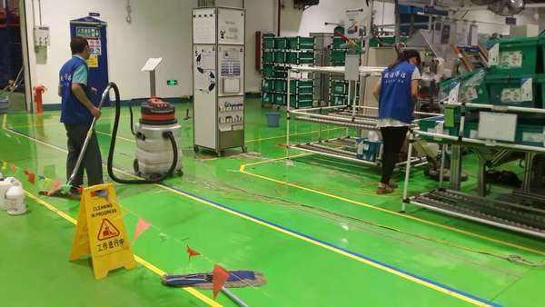

环氧地坪清洗
环氧地坪应该怎么清洗？
洗地机是清洁能手众所周知的，在许多地方都能见到清洁人员推着洗地机或者驾驶着洗地机在清洗地面，特别是那些新装修的酒店、饭店、车间等场所。
洗地机能清洗的地面范围很广，而环氧地面是其中比较特殊的一种，其平整、亮丽、防水、耐磨等特点非常受人喜爱，一些服装大卖场、纺织车间、无尘车间、地下停车场我们都能见到。但也因其装修价格昂贵需要好好保养，所以使用洗地机对它清洗时是有一些注意事项需要注意的。
1、环氧地面是比较娇贵的，因此一般洗地机进行清洁的时候都需要使用细软刷盘和百洁垫。
2、当停车场、卖场、车间只是有普通垃圾和灰尘的时候，洗地机应该配用中性清洁剂来进行清洗。
3、有时停车场和纺织车间会因为人的流通而带来一些砂砾甚至有金属屑等垃圾，那么应该用洗地机先清扫过后才能再行清洗、吸干。
4、当环氧地面有油污时就要用选用强力化油剂辅助洗地机进行清洁了，但是在清洗时要注意适当调轻刷子的压力以保护地面。
5、洗地机清洗工作过后应该将吸水扒、刷盘清洁干净，倒掉污水和剩的清洁剂并冲洗干净后风干，然后要放好并充电。
环氧地面能给人们带来美观的环境，只要好好的清洁和保养，那么就能够延长它的使用寿命，减少外来损坏和磨碾。合理的使用洗地机对其清洁不仅能有效进行清洁和保护，而且能节省清洁的时间和劳动力，并且用洗地机清洗后的效果很好、用水少、安全、方便。